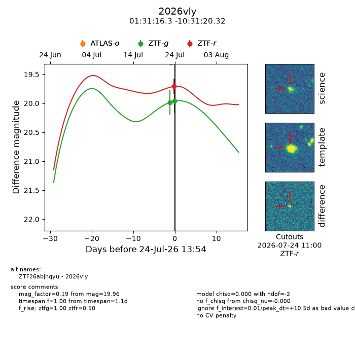
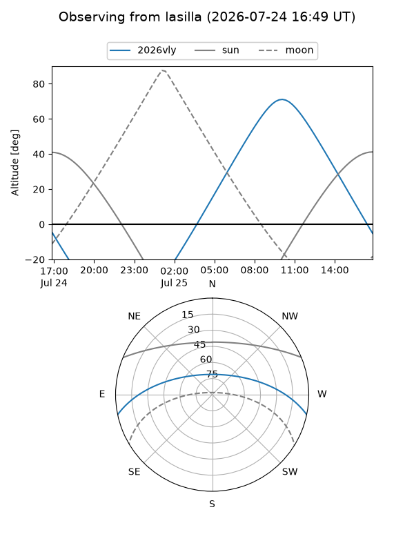
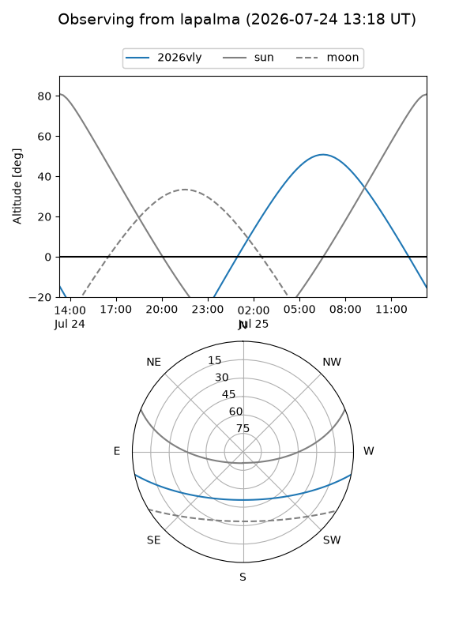
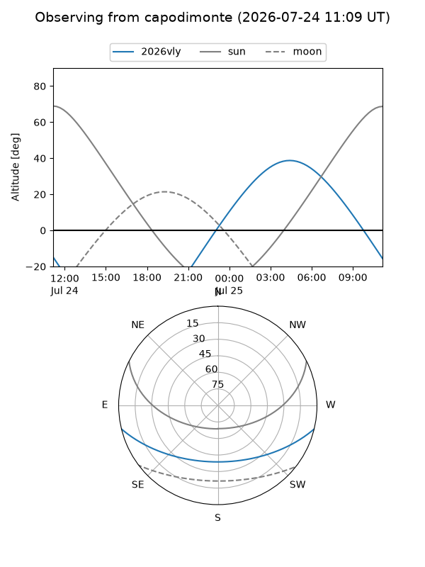
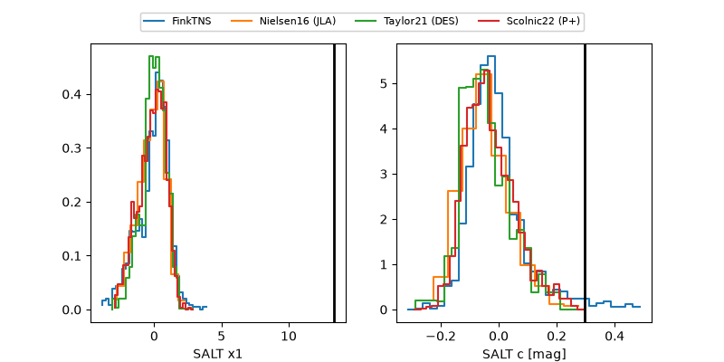

2026vly
Target 2026vly at 2026-07-24 13:56
Aliases and brokers:
FINK-ZTF: ztf.fink-portal.org/ZTF26abjhqyu
Lasair-ZTF: lasair-ztf.lsst.ac.uk/objects/ZTF26abjhqyu
ALeRCE-ZTF: alerce.online/object/ZTF26abjhqyu
YSE-PZ: ziggy.ucolick.org/yse/transient_detail/2026vly
TNS name: wis-tns.org/object/2026vly
Direct TNS query: direct search
alt names
ZTF26abjhqyu (ztf,fink_ztf)
2026vly (tns,yse)
Coordinates:
equatorial (ra, dec) = 22.8181,-10.52231
equatorial (HMS+DMS) = 01:31:16.34,-10:31:20.32
galactic (l, b) = (154.2880,-70.92803)
Flags:
TNS type: nan
peak dt: +10.5
Photometry:
last ztfg=19.96, ztfr=19.71
2 ztfg, 1 ztfr detections
Lightcurve

Visibility



Additional plots
